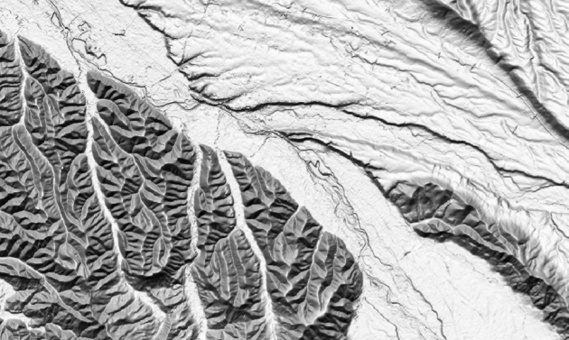
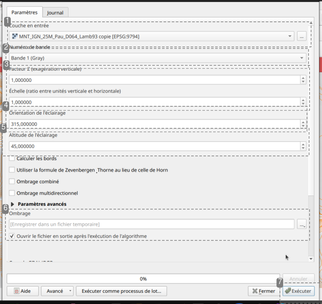

🌄 Représenter le relief en Ombrage💡 Sur les cartes IGN, vous avez un ombrage plus ou moins intense sur les versant sud-est des reliefs qui facilite le visualisation de la topographie. Et si nous faisions pareil !Procédure : Modélisation de l'ombrage d'un relief⚓Nous allons créer une nouvelle couche Raster, dans laquelle les pixels enregistreront non plus l'altitude, mais le degré d'ombrage par rapport à une source lumineuse. Pour ce faire, nous allons utiliser un outil spécifique de la boite à outil d'analyse Raster qui calcul, pixel par pixel, le degré d'ombrage en fonction des paramètres décrivant une source lumineuse (hauteur, angle, intensité).Attention : Nous allons créer un ombrage irréaliste !⚓Pour permettre une bonne lisibilité du relief, nous allons modéliser une source de lumière située en haut à gauche de notre carte. Cela correspond au Nord-Ouest géographique. Nous sommes bien d'accord que le soleil n'est jamais au nord-ouest et que cet ombrage ne sera pas une représentation réaliste de l'éclairement sur le terrain. Toutefois, nous le représenterons comme cela car notre oeil est habitué à lire le relief avec une source lumineuse en haut. Si nous mettions la source lumineuse en bas, nous verrions le relief à l'envers, avec les creux et les bosses inversés.L'objectif de cet modélisation n'est pas de modéliser l'ensoleillement, mais bien de favoriser un bonne perception du relief.ProcédureOuvrir l'outil d'analyse « Ombrage »⚓Nous travaillons sur une couche Raster donc l'outil Ombrage se trouve dans le menu... RASTER > Analyse > OmbrageParamétrer l'analyse d'ombrage⚓Il y a plusieurs paramètres à saisir avant d'exécuter l'analyse d'ombrage⚓On commence par saisir la couche MNT à partir de laquel sera modélisé l'ombrageEnsuite on renseigne la bande contenant l'information altimétrique (ici c'est simple il n'y en a qu'une.Ensuite on saisi les paramètres de l'éclairage : facteur d'éxagération verticale (augmentera le contraste), l'angle de la source lumineuse (Nord-Ouest = 315°), altitude de la source lumineuse (45° c'est bien).Enfin, on clique sur ... pour sélectionner le dossier dans lequel enregistrer le fichier d'ombrage que l'on va créer.Une fois tout bien paramétré, on peut executer l'algorithme d'analyse d'ombrage.Tadaaaaa !⚓La fenêtre de paramètrage ne se ferme pas automatiquement. Il faut cliquer sur le bouton fermer.Une nouvelle couche est apparue dans vos dossier du projet et dans votre projet sur le panneau couche.C'est votre couche ombrage. Elle devrait ressembler à cela :Truc & astuce : pour améliorer cet ombrage⚓Vous pouvez améliorer cet ombrage via la symbologie de la couche.Vous pouvez jouer sur le rendu de la couche en paramétrant un rendu « multiplié » cela rendra les pixels les plus clairs transparents et les pixels sombre opaque. vous pouvez également ajouter une transparence globale via l'onglet « transparence » situé en dessous de l'onglet « symbologie ».Une autre façon de le faire avec l'extension batch hillshader
Nous allons créer une nouvelle couche Raster, dans laquelle les pixels enregistreront non plus l'altitude, mais le degré d'ombrage par rapport à une source lumineuse. Pour ce faire, nous allons utiliser un outil spécifique de la boite à outil d'analyse Raster qui calcul, pixel par pixel, le degré d'ombrage en fonction des paramètres décrivant une source lumineuse (hauteur, angle, intensité).
Attention : Nous allons créer un ombrage irréaliste !⚓
Pour permettre une bonne lisibilité du relief, nous allons modéliser une source de lumière située en haut à gauche de notre carte. Cela correspond au Nord-Ouest géographique. Nous sommes bien d'accord que le soleil n'est jamais au nord-ouest et que cet ombrage ne sera pas une représentation réaliste de l'éclairement sur le terrain. Toutefois, nous le représenterons comme cela car notre oeil est habitué à lire le relief avec une source lumineuse en haut. Si nous mettions la source lumineuse en bas, nous verrions le relief à l'envers, avec les creux et les bosses inversés.
L'objectif de cet modélisation n'est pas de modéliser l'ensoleillement, mais bien de favoriser un bonne perception du relief.
Nous travaillons sur une couche Raster donc l'outil Ombrage se trouve dans le menu... RASTER > Analyse > Ombrage
Il y a plusieurs paramètres à saisir avant d'exécuter l'analyse d'ombrage⚓
On commence par saisir la couche MNT à partir de laquel sera modélisé l'ombrage
Ensuite on renseigne la bande contenant l'information altimétrique (ici c'est simple il n'y en a qu'une.
Ensuite on saisi les paramètres de l'éclairage : facteur d'éxagération verticale (augmentera le contraste), l'angle de la source lumineuse (Nord-Ouest = 315°), altitude de la source lumineuse (45° c'est bien).
Enfin, on clique sur
...pour sélectionner le dossier dans lequel enregistrer le fichier d'ombrage que l'on va créer.Une fois tout bien paramétré, on peut executer l'algorithme d'analyse d'ombrage.
Tadaaaaa !⚓
La fenêtre de paramètrage ne se ferme pas automatiquement. Il faut cliquer sur le bouton
fermer.Une nouvelle couche est apparue dans vos dossier du projet et dans votre projet sur le panneau couche.
C'est votre couche ombrage. Elle devrait ressembler à cela :
Truc & astuce : pour améliorer cet ombrage⚓
Vous pouvez améliorer cet ombrage via la symbologie de la couche.
Vous pouvez jouer sur le rendu de la couche en paramétrant un rendu « multiplié » cela rendra les pixels les plus clairs transparents et les pixels sombre opaque. vous pouvez également ajouter une transparence globale via l'onglet « transparence » situé en dessous de l'onglet « symbologie ».